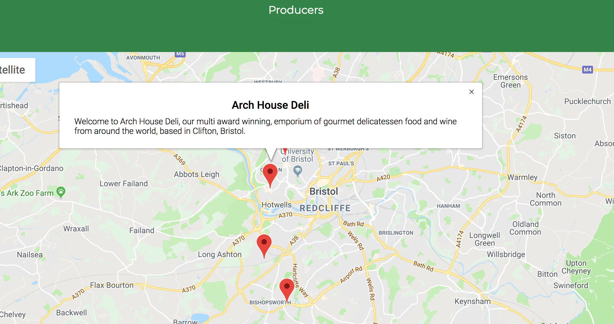
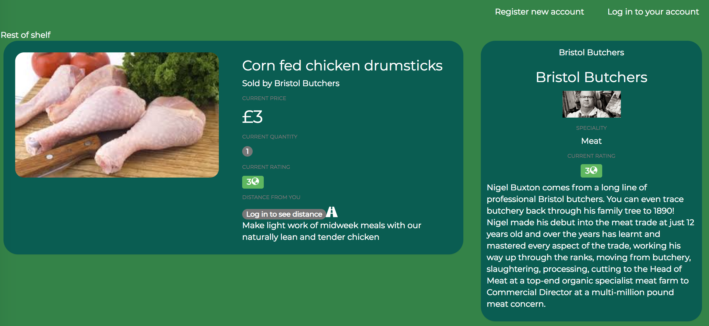

"Lokavore" is an online shopping site for locally sourced food. Once you have made a customer account you are able to see exactly how far away products are from your registered location. You can use the navigation bar to find the category you are interested in and then browse the products and the producers of these. Accounts are available for both customers and producers. If you register as a producer you have the option to add details and a picture of your establishment, you are then presented with a quiz that will determine the sustainability rating for your establishment. Once you have added your producer details you can then edit them or start to add and edit produce! There is also the option to delete your account which will remove your establishment and all associated produce from our website. We have added some example produce and producers so you are able to get a feel of what the website would look like with users.

